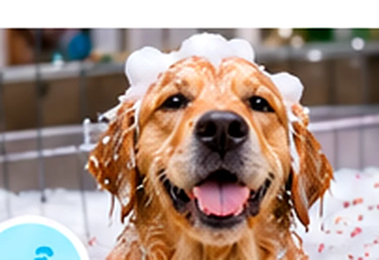
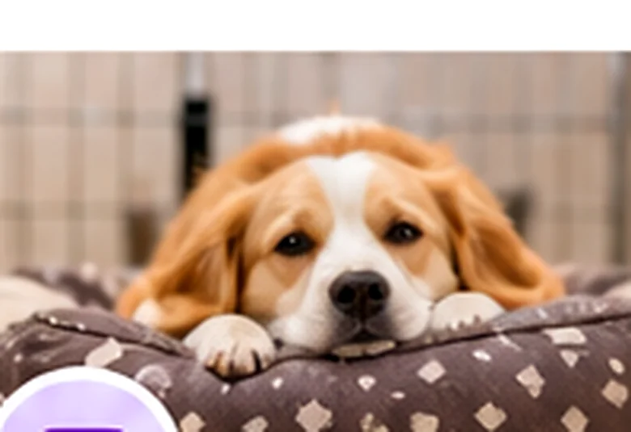
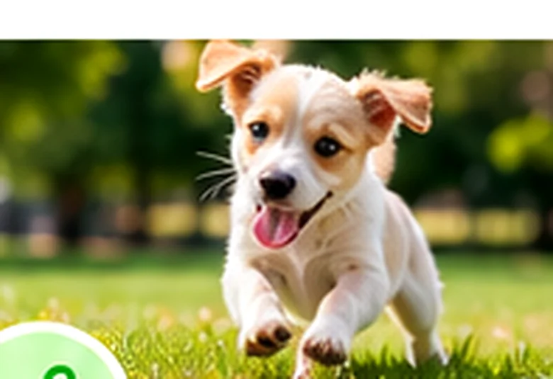
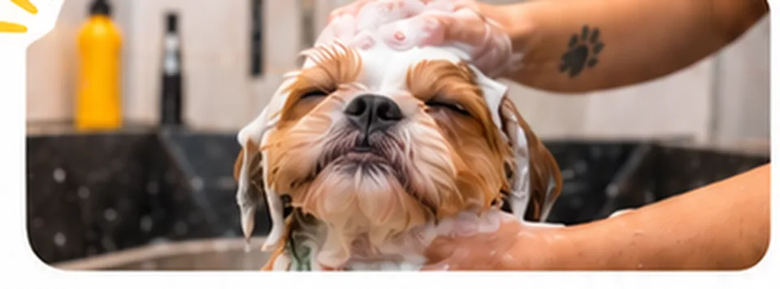

Banhos terapêuticos
Opções de banho com cromoterapia. Converse com a equipe sobre a indicação para seu pet.
Banho e tosa, banhos terapêuticos, hotel e creche em Cascavel. O cuidado que o seu companheiro merece, com atenção em cada detalhe.
NOSSO CUIDADO EM CADA ETAPA
Escolha o serviço que você procura e fale diretamente com a equipe para tirar dúvidas ou consultar horários.

Opções de banho com cromoterapia. Converse com a equipe sobre a indicação para seu pet.
Higiene e estética para manter seu amigo limpo, confortável e bem cuidado.

Hospedagem para quando você precisar viajar, com atenção ao conforto do seu companheiro.

Uma alternativa para a rotina do seu pet, com convivência, atividades e acompanhamento.
Imagens demonstrativas. As fotos oficiais da Puppy podem substituir estas imagens na versão definitiva.

Cuidar é nossa paixãoMAIS DO QUE UM PET CENTER
Na Puppy Pet Center, cada visita é uma oportunidade de proporcionar mais conforto e atenção ao seu animal. Nossa proposta é reunir serviços práticos e um atendimento próximo para os tutores de Cascavel.
SIMPLES E PRÁTICO
Converse com a equipe e conte o que o seu pet precisa.
Consulte disponibilidade, orientações e condições do serviço.
Pronto! O cuidado começa no dia agendado.
VAMOS CONVERSAR?
Conte rapidamente o que procura e prepare uma mensagem personalizada para enviar diretamente à Puppy pelo WhatsApp.
DÚVIDAS FREQUENTES
Informações gerais. Confirme regras e disponibilidade com a equipe pelo WhatsApp.
Falar com a equipeRecomendamos consultar a disponibilidade pelo WhatsApp antes de ir até a unidade.
Entre em contato para confirmar vagas, requisitos de hospedagem, rotina e o que é necessário levar.
A equipe pode orientar sobre critérios de participação, adaptação e disponibilidade para o seu pet.
É uma modalidade anunciada pela Puppy que utiliza iluminação colorida durante o banho. Consulte a equipe sobre como o serviço é realizado; não substitui cuidados veterinários.
ONDE ESTAMOS
Rua Marechal Floriano, 3683, esquina com Rua Natal · Centro, Cascavel/PR